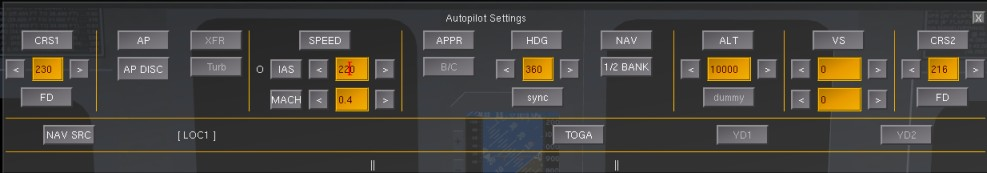
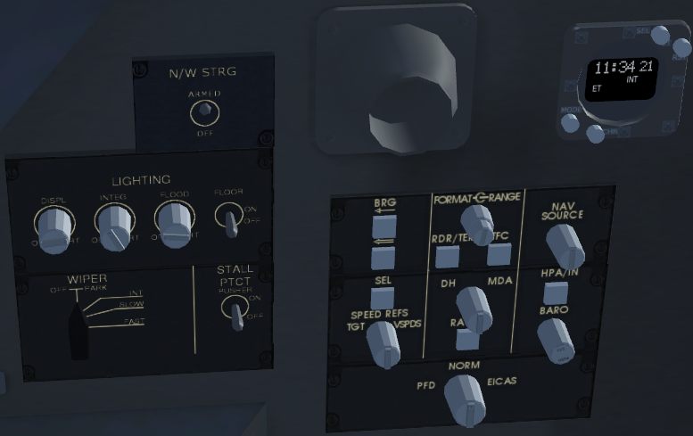
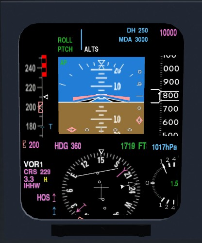
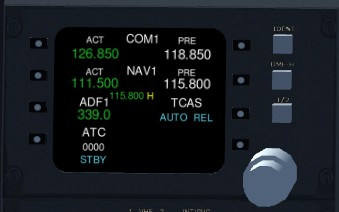

Please read the notes on implementation and bugs at the end of this document.
The CRJ700 features an automatic flight control system system (aka autopilot) comprising the following parts:
The FD (if engaged) will provide visual guidance to the pilot by showing command bars on the attitude indicator of the primary flight display (PFD). This allows the pilot to fly manually but still use the instruments as a guide. It also shows to the pilot, what the AP would do when engaged.
The AP is a rather simple part of the system, it controls pitch and roll of the aircraft. If engaged, it will follow the FD commands by using the elevator trim and the ailerons.
While yaw dampers are officially needed to operate the AP, they are not implemented in this model (yet). Don't worry, somehow it flys with out it ;)
Tip: You can find a list of autopilot shortcut keys in the aircraft help inside the simulator.
The FD has several modes that can be configured via the flight control panel (FCP, see below) or the AP dialog (hit F11 on your keyboard).
When the FD gets engaged, the basic lateral and vertical modes are active by default. Pressing a button to engage any other mode in a category will disable the respective basic mode. Pressing that same button again will cause the autopilot to revert to the basic mode.
Lateral modes:
Basic lateral mode holds the heading the plane was at when the mode was first activated; however, if the airplane is banked more than 5 degrees, this mode will hold the bank angle instead of the heading.
In heading mode the AP will turn to and hold a selected heading. The pilot selects this heading by rotating the HDG select knob. Selected heading is shown as readout on PFD and as heading bug on PDF and MFD compass.
Push the HDG select knob to sync (select current heading).
In NAV mode the AP will follow on of the navigation sources (NAV1, NAV2, FMS). You have to make sure you tune the NAV radio you want to use to a valid frequency and select it via the nav source selector on the side panel. NAV mode will not work, if the nav source is invalid.
NAV mode will be automatically de-selected on nav source change, e.g. FD lateral mode return to basic mode.
Approach mode is similar to NAV mode but will track a localizer/ILS. If a glideslope (GS) sender is available, it can be intercepted from below or above (see vertical modes below).
Vertical modes:
Basic vertical mode (PTCH) holds the pitch the plane was at when the mode is activated. You can change that pitch in 0.5° increments using the vertical speed wheel.
Altitude hold mode is selected by pushing the ALT button. The AP will sync the current barometric altitude and try to hold the aircraft at this altitude but not the pre-selected altitude.
Altitude pre-select mode is armed by selecting a target altitude with the altitude knob. A white ALTS is shown on PFD when armed. Select pitch or VS mode to climb/descent. A 1s tone will sound ~1000ft before reaching the pre-selected altitude. The AP will capture at +-200ft and level off. A green ALTS message indicates pre-selected altitude is tracked.
Make sure to calibrate the altimeter according to the current QNH 1) at the departure airport before startup and 2) before descending thru the transition level of the destination.
VS mode attempts to hold the selected VS, which is synced automatically on activation. You can change the VS reference in 100fps increments using the vertical speed wheel.
Approach mode is a combined lateral and vertical mode. Pressing the approach button will deactivate any other active lateral modes and track the localizer/glideslope. It will deactivate any vertical mode when the glideslope is captured and follow it.
The FD itself will not control the aircraft, you have to activate the AP first. It will follow the FD commands and control the elevator trim and ailerons.
Engaging the AP automatically engages the FD in basic mode and syncs the references for pitch and roll.
| Control name | Function |
|---|---|
| CRS1 | Adjust the NAV1 course radial (click face to set direct from current position) |
| FD | Turn the flight director on/off |
| AP ENG | Engage/disengage the autopilot |
| AP DISC | Disengage the autopilot |
| XFR | Not implemented |
| TURB | Not implemented |
| SPEED button | Select speed hold mode (it's NOT an autothrottle!) |
| SPEED knob | Adjust the target IAS or Mach speed (click face to switch between IAS/Mach modes) |
| APPR | Select approach mode |
| B/C | Not implemented |
| HDG button | Select heading hold mode |
| HDG knob | Adjust the heading bug |
| NAV | Select NAV mode. |
| 1/2 BANK | Switch bank angle limit between 30° (full) and 15° (half). Not allowed in some modes. |
| ALT button | Select altitude hold mode |
| ALT knob | Adjust the altitude setting |
| VS | Select vertical speed hold mode |
| VS wheel | Adjust the vertical speed setting or pitch setting |
| CRS2 | Adjust the NAV2 course radial (click face to set direct from current position) |
The AP dialog mimics the FCP plus some related buttons. See description above.

| Control name | Function |
|---|---|
| IAS | Switch to IAS reference |
| MACH | Switch to Mach reference |
| NAV SRC | Cycle NAV source (see "about nav mode" below) |
| YD1 (not implemented yet) | Turn yaw damper #1 on/off |
| YD2 (not implemented yet) | Turn yaw damper #2 on/off |
When the autopilot is engaged, the current active modes will appear in the white spaces near the bottom.
NAV mode has 3 different sources to follow:
In reality, "FMS2" is also included as an option- but there is only one GPS/Route Manager in FG.
NAV modes are switched using the knob on the side panel, the autopilot dialog, or the shortcut key F6. The current NAV mode is displayed on the PFD.
Changing the NAV source while in NAV mode will deactivate NAV mode and return to basic lateral mode.
NAV radios are tuned to a LOC/VOR/ILS via the radio stack panels on the pedestal panel or the dialog (F12). Enter a frequency into the standby field. Push the button to swap active and standby frequency.
Normally, the DME receiver will be tuned automatically to the same frequency as the NAV radio. However, if a LOC/VOR does not support DME, the pilot may want to use a separate frequency for DME. You can do so by tuning the NAV radio to the DME frequency and push the DME-H button on the right side of the radio panel ('H' in the dialog). The DME receiver is now locked to that frequency and changes to the NAV frequency will not change DME until you press the hold button again. A yellow 'H' in the PFD and radio stack display will indicate DME-hold. DME frequency is shown on radio panel.
 not implemented
The real CRJ700 is not equipped with autoland, so do NOT expect the simulated CRJ700 to land itself with the autopilot. Switchoff the AP at latest 300ft above. Set throttle to idle at maybe 50ft above and carefully pull the nose up.
The real CRJ700 has no autothrottle although its engines are controlled by FADECs. Thrust is controlled manually with the two thrust levers. By pushing the levers further forward (keyboard 'n' / 'N'), special thrust modes can be activated for climb, take of/go around, and max. performance. In reality this is somehow influenced by the FMS which knows about performance relevant data like total weight.
For beginners and the lazy one we re-included the autothrottle as an option. Find the config dialog at the bottom of the CRJ700 menu and select the corresponding option to get the magic button. Believe me, once you lerned to fly this aircraft you won't have problems with manual throttle. It is not necessary to fly exactly the same speed all the time.
Warning: Most parts of the AP logic are implemented according to the FOM and work correctly. The controllers had an overhaul but may still become unstable when switched in extreme attitude.